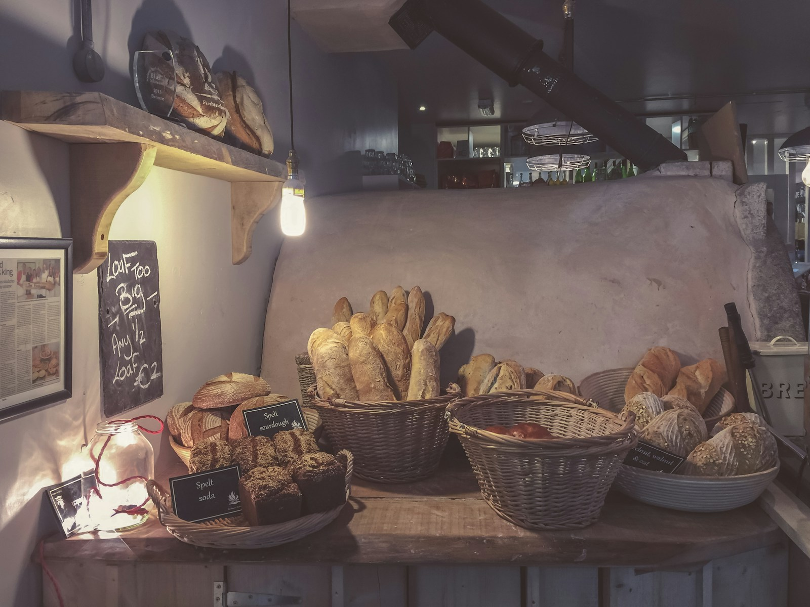

Bath, England
Country Sourdough
Our founding loaf — stoneground white and wholemeal flour, wild-leavened over 36 hours for a deep blistered crust and open, custardy crumb.

Origin, ferment time, ingredients, and allergens for every bread we bake — because you should know exactly what's in your loaf.
Our founding loaf — stoneground white and wholemeal flour, wild-leavened over 36 hours for a deep blistered crust and open, custardy crumb.

A dense, dark rye blend with toasted caraway, milled three miles from our hatch. Slow-proofed for a tight crumb and malty depth.

100% stoneground wholemeal, crusted in sunflower, linseed, and pumpkin seed. Nutty, dense, and built to toast beautifully on day two.

Olive-oil-rich dough, dimpled and topped daily — rosemary sea salt, or roast tomato and olive when the counter allows.

A naturally leavened take on the French classic — thin crisp shell, irregular open crumb, no commercial yeast in sight.

A buckwheat and teff blend developed with a coeliac regular in mind — dense, nutty, and baked in a dedicated tin to avoid cross-contact.

A naturally leavened brioche, enriched with cultured butter and egg — pillowy, faintly sweet, exceptional as French toast.

A large-format miche made with heritage einkorn and spelt, milled fresh weekly. Earthy, complex, and keeps well beyond a week.

Wet-doughed and lightly handled for maximum air pockets — our go-to for sandwiches at the Saturday market stall.

A wild-fermented blend of wheat, rye, and spelt folded with sunflower and flax seeds for a hearty, nutty crumb.

A naturally leavened country loaf blending white and wholemeal flour for a mild tang and rustic, open crumb.

Toasted walnuts and plump raisins folded through a wild-leavened dough — beautiful toasted with butter.

Kalamata olives, rosemary, and thyme folded through our base sourdough for a savoury, aromatic loaf.

Ancient spelt grain, lightly sweetened with local honey, for a tender crumb and gently nutty flavour.

Mashed potato folded into the dough for an exceptionally soft, moist crumb, finished with rosemary and sea salt.

A six-strand braided egg bread, gently sweetened with honey, with a shining egg-washed crust.

A dense 100% rye loaf, slow-baked overnight at a low temperature for deep, malty sweetness.

Lye-dipped for the classic mahogany crust and chewy interior, finished with a scatter of coarse salt.

Slashed into its traditional leaf shape and studded with olives — as much a centrepiece as a loaf.

Dried fig and toasted walnut studded through our sourdough — a natural match for a cheese board.

A traditional two-tiered round loaf with a crackling crust, baked the old way on the oven floor.

Boiled then baked for a chewy interior and glossy crust — plain, sesame, or everything.

Cooked on the griddle rather than the oven, with the classic nooks and crannies — best split and toasted.

Impossibly soft and pillowy, made using the Japanese tangzhong technique for an ultra-tender crumb.

A dense, seed-studded rye sliced thin — the traditional base for open-faced smørrebrød sandwiches.

Golden durum semolina dough, crusted in toasted sesame seeds, with a tight, sunny-yellow crumb.

Dark chocolate swirled through a buttery, yeasted dough, twisted and baked until glossy.

Mature cheddar and fresh chive folded through the dough, bubbling through the slashes as it bakes.

Brushed with olive oil and our own za'atar spice blend, baked hot and fast for a chewy, blistered flatbread.